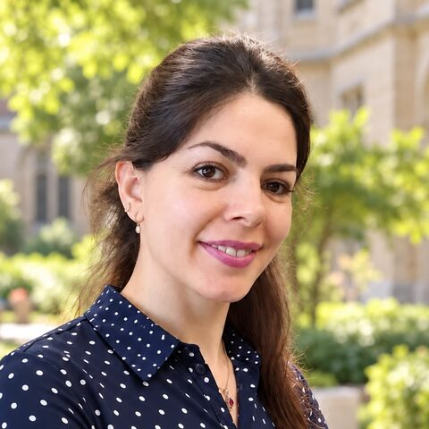

Hello, I’m Mahnaz
Applied linguist | Teaching Fellow | Postdoctoral Researcher
Victoria University of Wellington
Welcome, and thank you for stopping by.
I am an applied linguist whose work spans second language acquisition, psycholinguistics, and critical sociolinguistics. My research focuses on vocabulary learning and teaching, including formulaic language, and on how written, spoken and multimodal input contributes to language learning.
I also study language ideologies, language policy and multilingualism, alongside critical and educational perspectives on language technologies, including large language models. My work draws on experimental and quantitative methods, mixed methods, and critical discourse analysis.
To get in touch, please use the contact details on my VUW staff profile.
A little about me
Languages
Multilingual
I speak English, Italian, Spanish and Persian, and I never tire of how differently each one lets me see the world.
Places
Lived, studied and worked in
Iran, Italy, Spain, Belgium and New Zealand, where I now call Wellington home.
Beyond work
On the water and in the wild
Dragon boating, photography, reading, exploring new places, and cooking for friends.